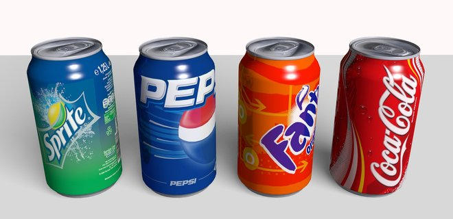

Что такое газированные напитки .

Наш организм на 60% состоит из воды. Для поддержания водного равновесия мы пьем каждый день. Кто-то предпочитает кофе, кто-то чай, пиво, соки, газировку. Основу любого напитка составляет вода. Помимо воды в напитках содержатся другие вещества, оказывающие воздействие на наш организм. Это воздействие может быть положительным или отрицательным, в зависимости от регулярности и объемов употребления того или иного напитка.
Взрослому здоровому человеку небольшое количество газированной воды не повредит. Но частое употребление больших количеств сладкой газированной воды может неблагоприятно отразиться на здоровье.
У каждого газированного напитка есть своя кисло-сладкая основа. Грубо говоря, в нем содержится какое-то количество сахара (либо его заменителя) и кислоты. Сахар - это чистый углевод. Один грамм сахара выделяет 3,85 килокалории. У пепси-колы - 57,74 ккал в 100 мл, у кока-колы - 42 ккал в 100мл. Можно подсчитать, сколько кусочков сахара содержится в банке емкостью 0,33 л того или иного напитка. В пепси-коле - 8 кусков сахара, в кока-коле - 6,5, в "Саянах" - 5,5, в "Швепс битер лимон" - 4 куска сахара.
Легко усваиваемые калории, которыми богаты газированные напитки, "обманывают" мозг. Они как бы "проскакивают незамеченными" и уменьшают чувство голода на столь незначительное время, что практически не сказываются на количестве пищи, которое человек съедает затем. Но "легкие калории", которые поступили в организм, все равно утилизируются, преимущественно - в жир. Поэтому чрезмерное увлечение сладкой газированной водой может увеличивать вероятность ожирения и сахарного диабета.
Людям, имеющим предрасположенность к ожирению и сахарному диабету, стоит пить облегченную воду - она изготовлена с применением подсластителя. В популярных напитках с "нулевой калорийностью" сахар заменен искусственными подсластителями, которые практически не усваиваются организмом. Калорий вы с таким напитком не получите.
Самый известный подсластители - аспартам (нутрасвит). Аспартам - это белок. У некоторых людей на этот белок может возникать аллергия. Другие подсластители: сахарин, сунет (ацесульфат калия), цикломат. У напитков с подсластителями энергетическая ценность очень низкая, практически на нуле.
Сахар и подсластители, содержащиеся в напитках, оставляют сладкое послевкусие, не способствующее утолению жажды.
Наиболее часто в газированных напитках применяют лимонную, яблочную кислоты. Реже - ортофосфорную кислоту. Кальциевые соли ортофосфорной кислоты растворимы лучше, чем кальциевые соли других применяемых в напитках кислот. Поэтому у людей, пьющих напитки, содержащие ортофосфорную кислоту, кальций вымывается из костей лучше. В некоторых случаях это может приводить к ослаблению костной ткани, кости легче ломаются.
Иногда вместо названия кислоты пишут цифровой код. Кислота лимонная - Е330, ортофосфорная - Е338.
Обязательно в любой газированной воде есть углекислый газ. Сам по себе он безвреден (его используют для лучшей сохранности напитка), но его присутствие в воде возбуждает желудочную секрецию, повышает кислотность желудочного сока и провоцирует метеоризм - обильное выделение газов. Людям с язвенной болезнью, гастритом с повышенной кислотностью и рядом других заболеваний желудка и кишечника, перед употреблением любой газированной воды, газ из бутылки нужно выпускать путем встряхивания. Тоже самое касается и минеральной воды. Для использования в лечебных целях из нее рекомендуется выпустить газ.
Сладкие газированные напитки провоцирует рак поджелудочной железы
Сотрудники Университета Миннесоты (США) на протяжении четырнадцати лет наблюдали за 60 524 мужчинами и женщинами в Сингапуре. За это время рак поджелудочной железы развился у 140 человек. Выпивавшие две и более банки сладких прохладительных напитков в неделю (в среднем по пять банок за 7 дней) заболевали онконедугом на 87% чаще.
При этом никакой связи между употреблением фруктовых соков и развитием рака обнаружено не было. Негативное влияние оказывает только газировка! Ученые объясняют это так: в коле и подобных ей напитках содержится очень много сахара, из-за чего в поджелудочной железе увеличивается выработка инсулина. Это и провоцирует рак. Кроме того, любители газированных напитков обычно питаются хуже прочих, и это тоже может плохо влиять на поджелудочную железу.
Сладкие газированные напитки убивают сердце
Все мы уже сто раз слышали, что здоровое питание должно сопровождаться не газированными напитками с красителями, консервантами, ароматизаторами и прочей химией, а чистой питьевой водой или зелёным чаем. Вот только следуем ли мы этому правилу?
Возможно, результаты недавнего исследования американских учёных заставят любителей газировки подумать ещё раз, прежде чем класть бутылку с «шипучкой» в тележку супермаркета.
Кардиологи напоминают, что сладкая газировка не является здоровым выбором и её потребление должно быть сведено к минимуму. Причём вредным для сердца питьём медики называют как колу с кофеином и сахаросодержащие газированные напитки, так и негазированные калорийные напитки и фруктовые соки, в состав которых входят подсластители, природные или искусственные ароматизаторы. Исследователи отмечают, что за последние 30 лет частота употребления таких напитков увеличилась более чем в два раза, особенно среди подростков и молодёжи.
Сладкие газированные напитки разрушают зубы
Частое употребление сладких газированных напитков значительно повышает риск остаться без зубов, утверждают специалисты Академии общей стоматологии.
Лимонная кислота, содержащаяся в фруктовой газированной воде, приводит к эрозии зубной эмали и, в следствии, к выпадению зуба.
Поэтому специалисты советуют отказаться от употребления таких напитков и заменить их обычным чаем и соками.
В ходе исследования специалисты сравнили влияние на зубную эмаль черного и зеленого чаев, содовой и апельсинового сока. Результаты оказались таковыми: чай, в отличие от газировки и сока, не разрушал эмаль; зеленый чай оказался полезнее черного - в нем содержится больше природных флавоноидов, обладающих противовоспалительными свойствами.
Но пить его врачи советуют без молока, лимона и сахара, потому как эти продукты понижают полезные свойства чая.
Противопоказания к употреблению газированной воды
Людям с хроническими заболеваниями (аллергия, избыточный вес, гастрит, язвенная болезнь, колит и др.), газированные сладкие напитки употреблять в больших количествах не рекомендуется.
Детям младше 3 лет желательно сладкие газированные напитки не давать.
Альтернатива газированным напиткам
Если вы планируете выезд за город, не поленитесь приготовить коктейль: чистая вода (или любая минералка, только не лечебная) - 1,5 л, сок цитрусового плода (лимона, апельсина), щепотка соли, щепотка сахара. Получится напиток с еле заметным кисловатым вкусом, который хорошо утоляет жажду и поддерживает организм.
Соки более полезны, чем газированные воды. Наиболее полезны свежевыжатые соки. Они содержат все витамины и микроэлементы, а также клетчатку и другие биологически активные вещества, которые содержит и свежий фрукт или овощ. Соки нашему организму усвоить проще, чем фрукт или овощ. К сожалению, возможность пить свежеприготовленные соки есть не у всех. Тогда стоить обратить внимание на консервированные соки. В процессе промышленной обработки соков часть витаминов, и прежде всего аскорбиновая кислота, разрушаются. Но в большинство соков промышленного производства все утерянные витамины вводятся дополнительно. Если продолжить разговор о полезных веществах, то в соках есть и калий, и железо. В них содержатся и такие важные вещества, как органические кислоты. Все это и составляет всем известную пользу соков. Кроме того, в ряде случаев сок служит хорошим подспорьем для стимуляции аппетита. К тому же, он достаточно питателен, в нем много углеводов, в основном сахаров фруктов и ягод. В соки, предназначенные специально для детского питания, запрещено добавлять какие-либо консерванты, кроме лимонной кислоты. Наиболее полезны соки с мякотью. Они содержат больше полезных веществ.
Помимо натуральных соков, встречаются еще нектары. Нектар - это соки, разбавленные водой и подслащенные сахаром. Содержание витаминов, минералов и прочих полезных компонентов в них поменьше, чем в соках, но разрыв в их количествах не столь существенен.
И в соки и в нектары добавляют сахар. Это связано с тем, что некоторые соки без сахара трудно пить из-за вкуса (например, лимонный или грейпфрутовый).
Соки обладают лечебным действием. Но для достижения эффекта взрослому человеку необходимо употреблять ежедневно 3 стакана сока. Детям младше 3 лет рекомендуется употреблять по 1 стакану сока в день, разводя его водой. Лучше не употреблять соки со всеми блюдами подряд и с минеральной водой. При хроническом заболевании органов пищеварения выпитые во время и после еды соки могут усилить брожение в кишечнике и спровоцировать обострение болезни. Чаще при пониженной и нормальной кислотности желудочного содержимого соки пьют за 30-40 минут до еды, а при избыточном образовании соляной кислоты в желудке - через час-полтора после еды.
Неумеренного потребления сока возрастает нагрузка на почки, что может привести к отекам. К тому же, соки не лишены "химии". Некоторые производители могут добавлять в соки красители и консерванты, иногда не сообщая об этом на упаковке. Эти вещества могут вызывать аллергию.
Минеральные воды, также как и соки, обладают лечебным действием. Эксперты Всемирной организации здравоохранения считают искусственные и натуральные минеральные воды равноценными. Но при одном условии: если минерализация воды проводится на хорошем оборудовании, с нормальным растворением солей и качественной углекислотой. Универсального совета относительно количества выпиваемой воды не существует. Все зависит от диагноза и сопутствующих заболеваний. При приеме лечебных минеральных вод, как и в случае с обычными лекарствами, возможна передозировка. Поэтому перед тем, как начать прием лечебных минеральных вод желательно проконсультироваться с врачом.
Выбирая напиток, не поленитесь изучить этикетку, на ней должны быть указаны ингредиенты. Отдайте предпочтение напиткам, изготовленным на натуральной основе.
По материалам сайта : http://89.rospotrebnadzor.ru/